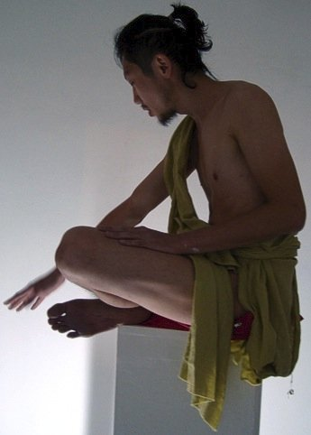
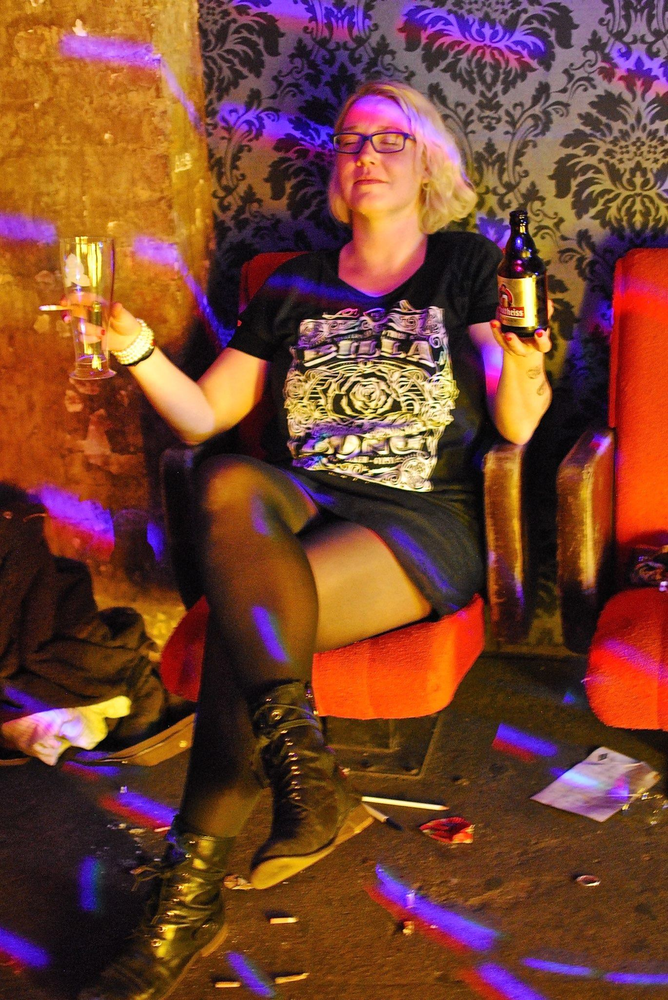

Berlin Performance Art Workshop
Term│2016/6/18～6/19
N-Factory AIR Program Invite long term residential artist in Berlin and Germany
About Workshop
Performance art is a body using ,across time and space, sense and sensibility way of expressing art. It trips away from intermedia, any art form can all exist within, a infinite possibility. Different from other way of object art creation, it also maintain a logical way of thinking and spiritual sensibility, touches observers acknowledge also opens up co-creating minds. Its reflecting also healing a person's soul to the reality of society , a communication program and experience sharing of human common language.
In this workshop , Lan from Berlin and joy from Germany will guide us, from how to analyze the possibility of human body with sense and logical way of thought, at the same time sensibly experience the use of mind and lust on performance art, by observing and using space and time element, compare with other way of expressing art, built a personal performance art language.
1. Conceptual Body by Lan Hungh
18th June, NengShengXing Factory
N.T. 350，Student 300（2PM - 5PM）
2. The Absent Body by Joy Harder
19th June,
NengShengXing Factory
N.T. 350，Student 300（2PM - 5PM）
3.Talk with Joy Harder & Lan Hungh
18th June 5:30pm, NengShengXing Factory
Free
4.Performance Art Event
19th June 5:30-7pm
N.T.350（with drink）
Body and existence, active and passive, environment & event & audience, individual in the collective behavior,
interact and improvise between audience, space, time and object.
Artists
Joy Harder &
Lan Hungh &
Workshop members：
柯姿安 Tzu-an Ko＆Liya Wu＆
翁鈺雯＆
李鈺婷＆
蔡蔡＆
陳怡儒
About APA-B

APA-B, Association for Performance Art in Berlin ,as known as Month of Performance Art Berln before（MPA-B ), a 31 day, city-wide and artist-run platform for independent performance art practices, running annually in May, since 2011.In August 2013, APA-B was founded as a non-profit association to help the performance artist and promote performance art.
APA-B understands performance art to be the sum of known and newly emerging practices of process based, transformative, integrative and intermedia art that can be presented live. The association places special importance on the development of new and experimental forms of performance art.
Speaker：

Lan Hungh
(Assiciation for Performance Art Berlin, APAB e.v.)
LAN Hungh is a mixed media, a behavior, film, music and installation artist, uses mind and body as subjects, and the structure of communication language as his creation base. He often install his own body in objects, architecture and the environment, presenting the combination of intimacy and body politic on his concept in art. Now known as the Association for Performance Art Berlin, APAB e.v.
Born in Taiwan,Taipei. After getting a degreed in music from National Taiwan University of Arts，NTUA, he went to France, to have a further learning in Conservatoire National de Région de Rueil-Malmaison, he studied theater of music with Gaston Sylvestre, then earn his diploma with an outstanding respond, in 2005 he starts creating in Germany-berlin and had a series of performances, he also curated exhibition of modern art. He held post in galleries-Gallery33 and art space-stattberlin as art director and curator in berlin, and curated a wide ranging exhibition at a old winery-Landsbergerallee with almost 100 artists, participated in artist In resident ''INTERVAL'' program in Liverpool,Wolstenholmes , curator of Month of Performance Art in Berlin.
On performance art ,he was invited to the 54th La Biennale di Venezia, exhibited in Jerusalem of 2012, Madrid, Spain tobacco factory performance art festival, Leipzig performance art festival and many importand performance art events like Venice Infaction etc.

Joy Harder (Performance Artis)
Joy Harder , born in Hamburg, 1981, now lives in Berlin. Performance and victual artist, production of art management, counselor of drama theory and theater set designer. Major in media in Freie University Berlin,research in drama and new german literature, also studied theater design in University of Glasgow.
she combines behavior, film, interdisciplinary research to all interact in performance art creations. She now focus on UNFUG subjects, the journey of death and rebirth.
she's also the founder of Harder&Schultz, The Reduction Group and anabiotic production platform (e)artwork 。